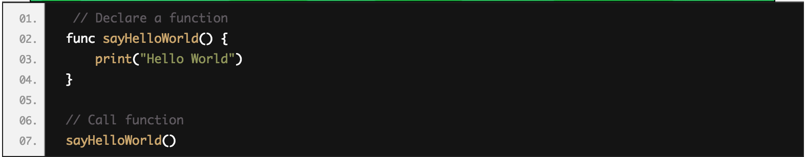

Summary
"Swift is a powerful and intuitive programming language for macOS, iOS, watchOS and tvOS. Writing Swift code is interactive and fun, the syntax is concise yet expressive, and Swift includes modern features developers love. Swift code is safe by design, yet also produces software that runs lightning-fast." - Apple
Project Ideas:
- clones of apps like YouTube or like Firefox
- calculator
- calender
Example Code:
Declaring a function in swift:
Modern Features of Swift:
Using Xcode:
Xcode is an Integrated Development Environment developed for Mac and iOS developers. It allows its users to write and compile code in one application. "Swift compiles software more quickly, helps you deliver faster apps, and generates even smaller binaries. Test suites complete many times faster, working with a team is simpler and more secure, and much more."